The silent, invisible force of carbon, cycling through our planet's atmosphere, oceans, and land, is fundamental to life as we know it.
Yet, an imbalance in this delicate system, primarily driven by human activities, has unleashed a cascade of profound and far-reaching environmental impacts.
For millennia, the carbon cycle maintained a natural equilibrium, regulating Earth's temperature and fostering biodiversity.
However, the industrial revolution marked a pivotal shift, ushering in an era where the burning of fossil fuels—coal, oil, and natural gases released vast quantities of stored carbon into the atmosphere as carbon dioxide (CO₂) or Carbon monoxide . This dramatic increase has become the primary driver of global warming, setting in motion a series of interconnected environmental challenges that threaten the very fabric of our planet.
The most prominent and dire consequence of elevated carbon emissions is the relentless march of global warming.
Carbon dioxide, along with other greenhouse gases, acts like an insulating blanket, trapping heat within Earth's atmosphere.
While a natural greenhouse effect is essential for life, human-induced emissions have thickened this blanket to dangerous levels, leading to a steady and discernible rise in global average temperatures.
This warming trend is not merely about hotter days; it fundamentally alters climatic patterns worldwide.
We are witnessing more frequent and intense heatwaves, turning once-temperate regions into scorching landscapes and posing severe risks to human health, agriculture, and ecosystems.
As temperatures climb, the Earth's delicate hydrological cycle is thrown into disarray, manifesting in a cruel dichotomy of droughts and floods.
Global warming is the long-term rise of Earth’s average surface temperature caused mainly by human activities that release greenhouse gases (like carbon dioxide and methane).
Even small average temperature increases shift weather patterns, melt ice, and unbalance ecosystems — and because Earth is connected, those changes ripple into sea-level rise, stronger storms, damaged food systems, health risks, and economic stress.
Understanding global warming first makes it easier to see why so many environmental problems are connected.
Global warming has been noticed by expert scientists how have been collecting the earth's data on climate patterns and temperature increase for a long time and scientific observation
Source: NASA, NOAA, Berkeley Earth, Met Office Hadley Centre, Cowtan and Way analysis (1880-2020).
Global temperature records start around 1880 because observations did not sufficiently cover enough of the planet prior to that time.
The line plot above shows yearly temperature anomalies from 1880 to 2020 as recorded by NASA, NOAA, the Berkeley Earth research group, the Met Office Hadley Centre (United Kingdom), and the Cowtan and Way analysis.
Though there are minor variations from year to year, all five records show peaks and valleys in sync with each other.
All show rapid warming in the past few decades, and all show the last decade as the warmest.
NASA’s temperature analyses incorporate surface temperature measurements from more than 20,000 weather stations, ship- and buoy-based observations of sea surface temperatures, and temperature measurements from Antarctic research stations.
These in situ measurements are analyzed using an algorithm that considers the varied spacing of temperature stations around the globe and urban heat island effects.
Unfortunately these temperatures are still rapidly increasing annually
Source: NASA (2022 global warming chart)
The temperatures we experience locally and in short periods can fluctuate significantly due to predictable, cyclical events (night and day, summer and winter) and hard-to-predict wind and precipitation patterns. But the global temperature mainly depends on how much energy the planet receives from the Sun and how much it radiates back into space. The energy coming from the Sun fluctuates very little by year, while the amount of energy radiated by Earth is closely tied to the chemical composition of the atmosphere—particularly the amount of heat-trapping greenhouse gases.
The increase in green house gasses on earth results into the increase in gradual temperatures
Below is a 3D simulation of global warming, you can adjust the CO₂ and the radiation from the sun
SUN RAYS
🏭 CO₂ LEVELS350 ppm
🔥 SOLAR RADIATION50%
TEMP
15.0°C
CO2
350 ppm
HEAT
50%
TIME
0 yrs
The leveling off of temperatures in the middle of the 20th century can be explained by natural variability and by the cooling effects of aerosols generated by factories, power plants, and motor vehicles in the years of rapid economic growth after World War II.
Fossil fuel use also increased after the war (5 percent per year), boosting greenhouse gases. Cooling from aerosol pollution happened rapidly.
In contrast, greenhouse gases accumulated slowly, but they remain in the atmosphere for a much longer time.
According to former GISS director James Hansen, the strong warming trend of the past four decades likely reflects a shift from balanced aerosol and greenhouse gas effects on the atmosphere to a predominance of greenhouse gas effects after aerosols were curbed by pollution controls.
Impact of global warming to the world
While a natural greenhouse effect is necessary to keep the planet habitable, the excess CO₂ acts like an extra blanket, intensifying this effect and causing the average global temperature to rise.Resulting into: Impact on Agriculture, Ecosystem and Biodiversity Impacts, Melting Ice and Sea Level Rise,Extreme Weather, and drought
Extreme Weather
We have entered an unprecedented era – one defined by an accelerating warming planet and an escalating threat of extreme weather events globally.
From raging wildfires to engulfing vast swathes of land, torrential floods reshaping coastlines, scorching heatwaves baking communities alive and ferocious storms battering vulnerable regions – these events aren't simply random occurrences;they're an undeniable consequences of our changing climate.
Global warming isn't just about raising temperatures; it's fundamentally altering the planet's systems and unleashing forces that are responsible to our extreme weather changes.
It's undeniable truth that our miss use of carbon and over reliance on fossil fuels has pushed our earth's temperature beyond it's natural limits.
Global warming doesn’t create natural disasters out of nowhere, but it makes many of them stronger, more frequent, or more unpredictable.
This happens because the Earth’s atmosphere and oceans are getting warmer due to increased greenhouse gases.
Natural disasters made more stronger,frequent and more unpredictable by global warming
Stronger hurricanes and cyclones — hurricanes get energy from warm ocean water
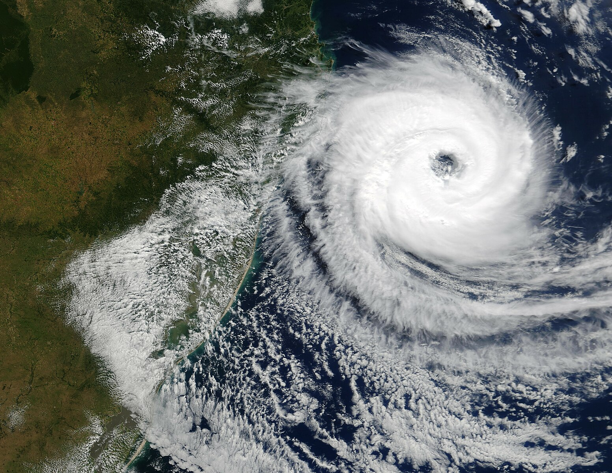
Source: NASA - Hurricane Catarina (2004-03-27)
fig1:Catarina 2004-03-27
1. Warm Ocean Water as a Fuel
Heat Transfer:
When warm ocean water warms by absorbing solar radiation and becomes relatively warmer than surrounding air at an underwater temperature, this creates an “convection” process – basically, warm water becomes lighter and rises rapidly with cooler water below. This rising water can create an enclosed circulation.
Rotation: This rising warm water doesn't just stay rising; its rotation creates an inward spiral that strengthens as it moves higher up.
This rotation can be caused by internal forces within the storm itself or by that as movement can be driven to land causing destruction of property
Science book should be rewritten after a rare thing happened on March 2004
The First Hurricane in the South Atlantic
Normally, hurricanes don’t form in the South Atlantic because the conditions there are usually too unfavorable (like cooler waters and strong wind shear).
But in March 2004, something extremely rare happened:
️ Hurricane Catarina
Occurred off the coast of southern Brazil (mainly Santa Catarina and Rio Grande do Sul).
It was the first recorded hurricane-strength storm in the South Atlantic.
Winds reached roughly 120 mph (195 km/h).
It caused significant damage to buildings and disrupted communities.
Catarina shocked meteorologists because it showed that regions not known for hurricanes might become more vulnerable as the climate changes.
It raised concerns about:
shifting storm patterns
warmer oceans in places that used to be too cool,
the possibility of more unusual storms in the future , this is alarming.
More intense heatwaves — hotter average temperatures make extreme heat more common.
Heat waves aren't simply about temperatures going up – they’re an intricate phenomenon involving radiation and atmospheric conditions. At its core, heat waves occur when an Earth-based heat source emits infrared radiation – invisible light – into space and then radiates that energy back towards Earth as heat.
This process happens constantly throughout the day and night, influencing temperatures across large areas.
This radiation does not travel as far as visible light does – it’s absorbed by objects before travelling again.
A heat wave typically starts as an area becomes very hot sometimes hundred degrees but requires significant solar energy essentially sunlight or strong convection localized warm air rising to gain enough power.
As that heat energy radiates outward towards space then cools down.
This cooling process happens rapidly as energy escapes into space.
This becomes an intensifying process and can be rapidly localized but can spread throughout an entire region.
The intensity can vary based on various weather factors like cloud cover or proximity by landmasses.
Some of the most deadly heat‑waves in the last 25 years
2003 European heatwave Much of Europe (France, Italy, Spain, Germany, etc.) ~72000 total excess deaths across 15+ countries.
2010 Russian heat wave Russia (and some adjoining areas) ~56000 excess deaths.
2022 European heatwaves Europe (many countries) ~61672 heat‑related deaths estimated.
2015 Indian heat wave, and 2015 Pakistan heat wave India (southern & other states) & Pakistan (Sindh, Karachi, etc.) India: ≥2500 deaths. Pakistan: ~2000 deaths.
2019 European heatwaves Western & Central Europe (Netherlands, France, UK, Germany, Belgium…) Estimated ~2500 excess deaths over the summer; some countries saw 400+ excess deaths in a week.
Note: Some people are still unnoticed but where still killed by these dangerous heat waves
Melting Ice and Sea Levels Rise
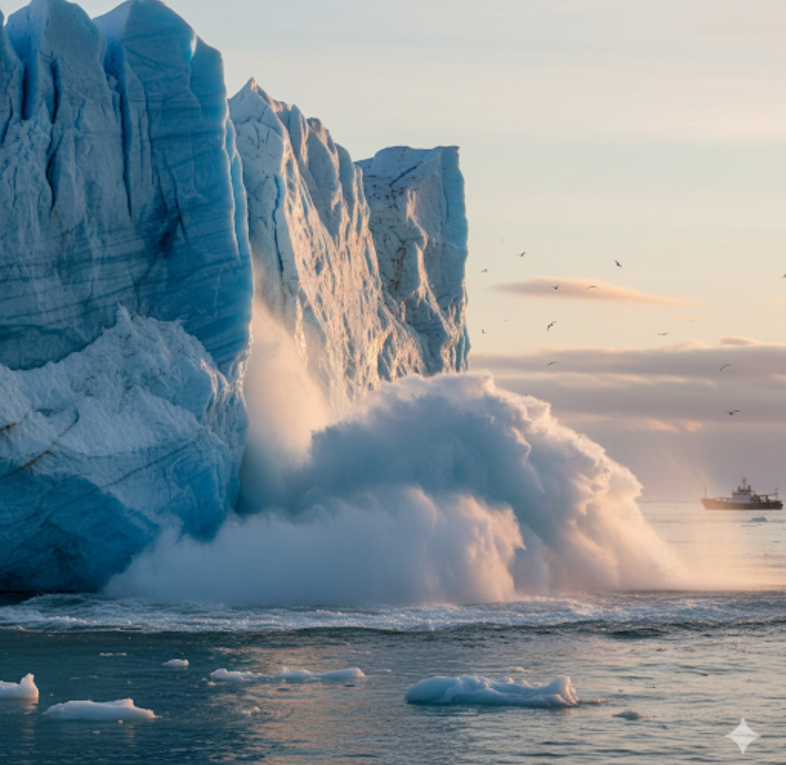
Are we losing our planet’s most precious gifts? The slow and relentless rise of sea levels – an indicator in this day’s report isn't just an environmental issue; it’s an existential challenge for us all. Melting ice at an alarming rate doesn't just mean hotter summers; it’s pushing entire coastal communities into an uncertain future and threatening vital ecosystems and livelihoods across our world.
Antarctica at the South pole
According to research based on satellite data (GRACE and GRACE‑FO), between 2002 and 2023 Antarctica lost on average about 150 billion metric tons of ice per year.
Over a longer period, from 1992 to 2020, the estimated total ice loss from Antarctica is around 2,671 ± 530 gigatons (a gigaton = one billion tons), which corresponds to about 7.4 ± 1.5mm of global sea‑level rise.
The bulk of this loss comes from the western part of Antarctica (the West Antarctic Ice Sheet) and the Antarctic Peninsula.
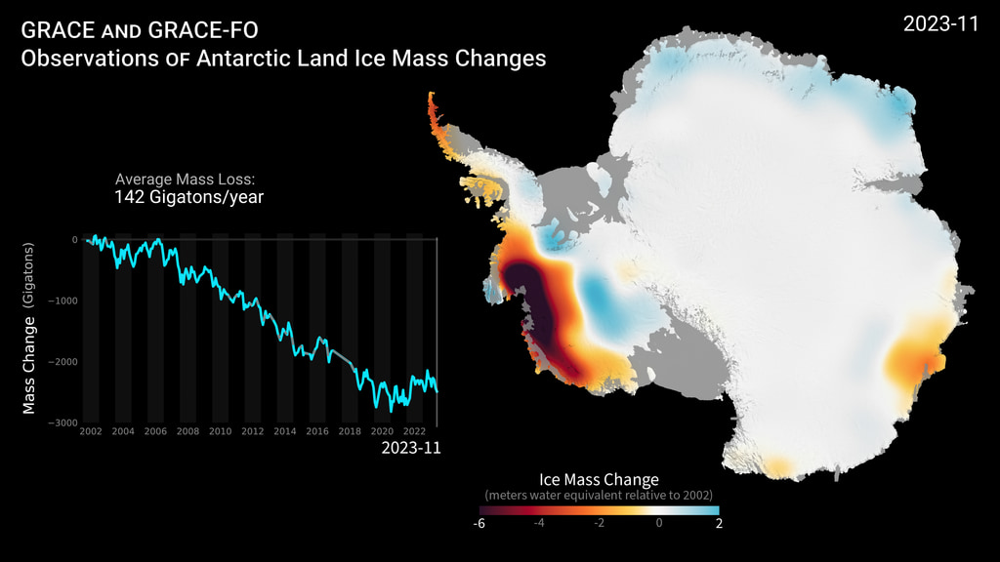
Credits: NASA, GRACE and GRACE-FO missions
What the map shows
The images above (from NASA / GRACE data) use color‑coding:
Red / orange areas show where the ice sheet has lost mass — mainly in West Antarctica and parts of the Antarctic Peninsula.
Blue / light-blue areas show where there has been some gain in ice mass — in parts of East Antarctica (mostly due to increased snowfall).
Overall, the net change is negative: the gains in the East haven’t compensated for the large losses in the West.
Context & significance
The pace of ice loss has accelerated over recent decades: in the 1980s, Antarctica lost about 40 gigatons per year; by the 2010s, this had increased to ~252 gigatons per year in some estimates.
If the current trend continues, continued ice loss from Antarctica will contribute significantly to global sea‑level rise, affecting coastal regions worldwide.
Greenland at the North Pole
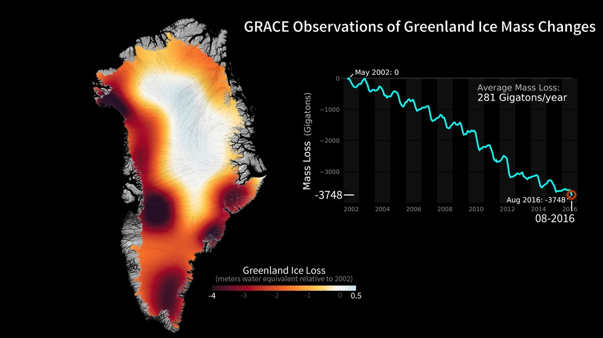
Source: NASA, GRACE Greenland observation ice mass changes
Greenland is melting fast, cracking and losing mass
According to recent data, Greenland’s ice sheet has been losing ice for 28 years in a row: more ice melts than what is gained as snow.
Between 2016 and 2021, a scientific study found that thousands of big crevasses (cracks) opened across the ice sheet — about 930 million cubic meters of new crack volume over just five years.
These cracks make the ice sheet more unstable and accelerate ice loss.
Melting and ice loss aren’t uniform — edge glaciers and coastal outlet glaciers (the ones that end in the sea) are retreating, calving (breaking off into icebergs), and thinning.
The melt contributes fresh water into the ocean, which disrupts ocean circulation and accelerates global sea-level rise.
What scientists warn could happen — major global and regional impacts
The ice sheet of Greenland contains enough ice to raise global sea levels by about 7.4 meters if it melted completely.
On current trajectories: rising melt and accelerating ice flow could cause significant sea-level rise by 2100 — contributing to flooding, coastal erosion, displacement of populations, and loss of coastal lands.
Freshwater influx into oceans from Greenland’s melt can also disrupt ocean currents — which play a huge role in regulating climate; that could affect weather, storms, rainfall, and even agriculture globally.
The melting reduces the Earth’s capacity to reflect sunlight (albedo effect), because white ice reflects more sunlight than darker melted surfaces; this accelerates warming overall.
For the Arctic and local ecosystems: loss of ice threatens wildlife adapted to cold environments (animals, marine life), changes habitats and may lead to ecosystem collapse or major shifts.
Scientists and institutions sounding alarm bells
Scientists from a 2025 study (using 8,000 high-resolution satellite maps) reported that Greenland’s ice sheet is cracking much faster than before — a warning sign that ice mass loss is accelerating.
According to NASA, the melt from Greenland over the past decades amounts to trillions of tons and has already contributed to measurable sea-level rise globally — and will continue to worsen if trends hold.
Glaciologists and climate scientists warn that changes in Greenland may represent a “tipping point” — once certain thresholds (temperature, melt rate, freshwater input) are passed, feedback loops could accelerate ice loss and sea-level rise beyond current projections.
Falling the Peaks: The Dramatic Transformation of Our Mountains
Mountains aren't just majestic; they’re living stories etched into time.
We stand at an edge where nature's dramatic artistry meets an accelerating change – where ice sheets are shrinking and shifting like whispers carried on an eternal breeze across our planet’s vast and ancient landscapes.
This isn't an impending doom; it’s an *evolution*. The dramatic retreat of glaciers isn't an end – it’s an *transformation*. It’s revealing previously hidden depths and altering ecosystems we’ve relied upon and haven't even begun quite understanding fully.
This isn’t just about losing ice; it’s about witnessing our planet’s unwavering resilience and an awe-inspiring symphony playing out before our very eyes!
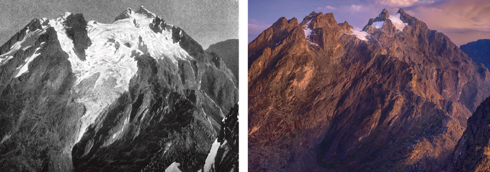
Source: NASA Earth Observatory - Rwenzori Mountains glacier comparison
Rwenzori Mountains (Uganda / DR Congo) — before & after glacier loss
Historical photos (e.g. from 1906) document that glaciers once thickly covered peaks like Mount Stanley and Mount Baker.
Recent monitoring shows a severe decline: glaciers in Rwenzori have shrunk drastically, with much of the ice lost.
For instance, the main remaining glacier on Mount Stanley lost nearly 30% of its surface area between 2020 and 2024.
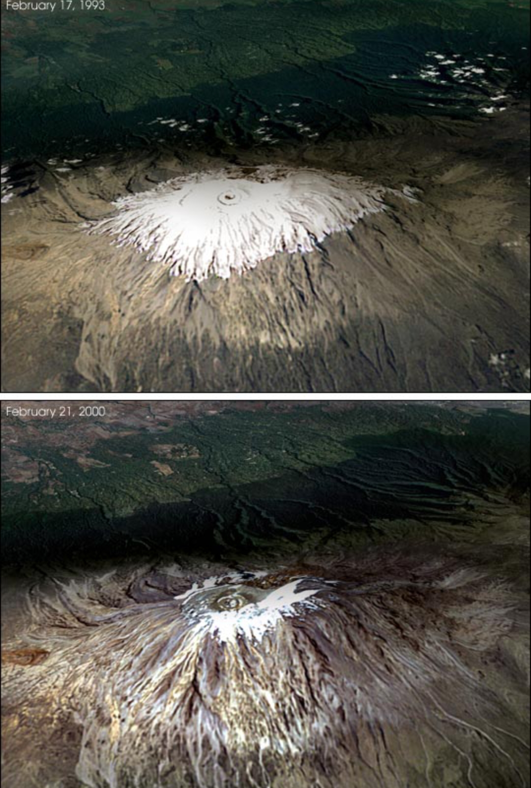
Source: NASA Earth Observatory - Mount Kilimanjaro glacier retreat
Mount Kilimanjaro (Tanzania) — before & after glacier retreat
The glacier and snow cover on Kilimanjaro have dramatically diminished over the decades.
For example: satellite‑based “Earthshots” images from 1976 vs 2013 show a stark reduction in the mountain’s ice fields.
Experts estimate that between 1912 and 2011, around 85% of the ice cover on the summit disappeared.
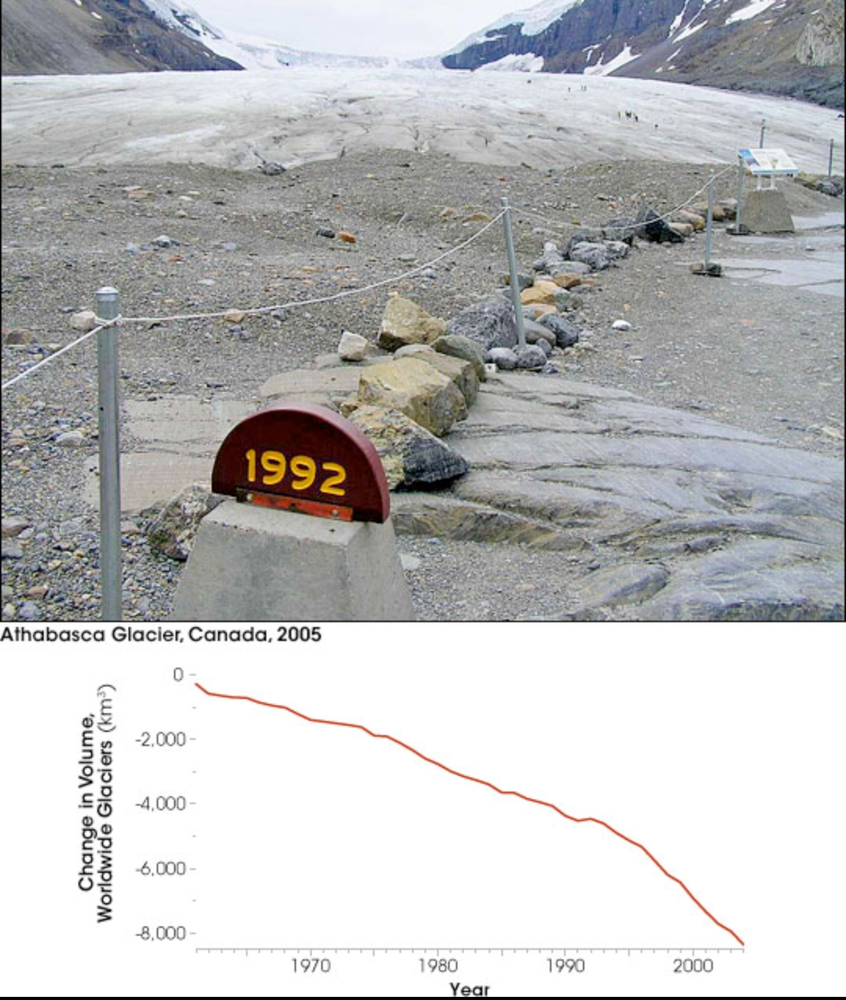
Source: NASA - Athabasca Glacier, Canada retreat
Athabasca Glacier (Canada — Rockies)
These images illustrate how the Athabasca Glacier has receded significantly over the decades — a dramatic example of glacial retreat in North America.
The retreat of Solheimajökull Glacier in Iceland is documented via before‑and‑after photographs — showing noticeable glacial shrinkage over less than two decades.
Historical vs. modern photos from the public‑domain collections show how Jackson Glacier — among others in the park — has shrunk dramatically over the last century.
Corbassière Glacier (Switzerland — Alps / Grand Combin)
These images from 2001 and 2023 show the retreat of Corbassière Glacier, reflecting a broader pattern of glacial decline in the Alps in recent decades.
Are we heading towards an underwater world?
The rising sea levels aren't just an abstract idea – they’re already having an undeniable impact here and everywhere else around the world.
We’re witnessing an alarming trend: our coastlines aren’t just shifting; they’re rising.
This isn't just an issue affecting coastal communities; it’s threatening vital ecosystems, disrupting economies and raising profound questions about our future.
What is sea level rising?
Rising sea levels mean that our oceans are absorbing more water than they can naturally hold they're simply getting bigger!
This isn’t an accidental process scientists believe that warmer waters provide an extra layer of moisture which can contribute significantly.
This warming creates an ocean current system which leads more water into lower latitudes which can disrupt sea levels as they rise as well
How is rising sea levels affecting us?
Here’s how rising sea levels impact our world:
Flooding:
Coastal communities often experience an increase in flooding during storms – especially heavy storms or an increase frequency as they happen.
Floods are caused by:
Warmer air which holds more moisture and resulting into more intense rainfall.
As the climate warms, the atmosphere can hold more moisture — which means when it rains, rainfall can be much heavier and more intense.
Melting glaciers and snow increase river discharge .
Rising sea levels and stronger storms which results into coastal flooding.
Examples : Pakistan (2022): Monsoon rains worsened by warmer climate caused floods that affected 33 million people, destroyed crops, homes, and infrastructure.
Germany & Belgium (2021): Heavy rain led to catastrophic flooding, killing 200+ people and causing billions in damages.
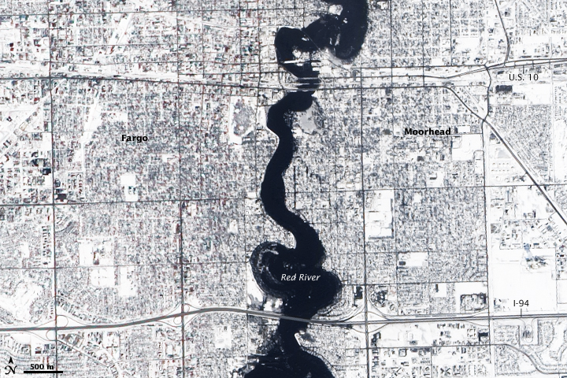
Source: NASA - Flooding on the Red Sea
A satellite image from NASA shows flooding over the Red River in Fargo, North Dakota / Moorhead, Minnesota — illustrating how river floods can affect towns and farmland.
Another NASA‑observed event: floods in Pakistan triggered by monsoon rains worsened by climate change, leaving large areas underwater.
Heavy floods destroy homes, farmland, infrastructure. They displace people, damage crops, and can lead to food shortages or economic hardship.
Erosion:
Coastal land can erode more rapidly as sea levels rise, leading can be eroded landscapes
Habitat Loss:
The rise in sea levels can destroy vital habitats like mangrove forests and coral reefs that provide shelter and provide oxygen for many marine life species
Economic Disruptions:
From fishing and tourism industries impacting coastal economies, and property damage due water surge impacting infrastructure and businesses
Migration:
People have an increased pressure to move as sea levels rise or coastal communities become submerged!
The primary culprit isn’t just climate change – while climate change definitely plays a role by increasing temperatures overall; warmer water causes an ocean current system which leads more water into lower latitudes that can disrupt sea levels as well.
We can also look into various other factors like deforestation and urban sprawl that adds land surface and creates more rainfall as well.
Ecosystem and Biodiversity Impacts
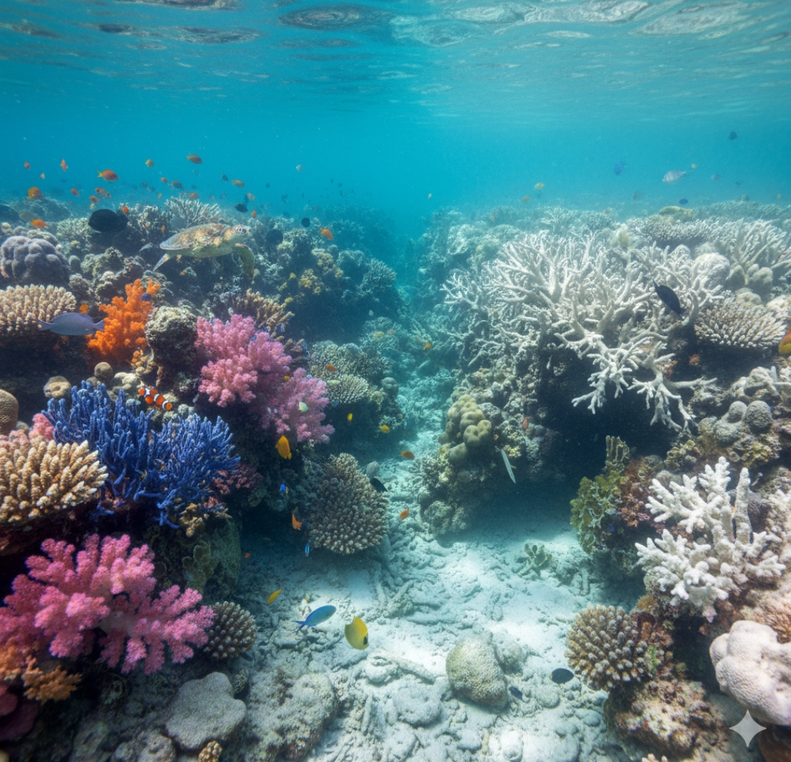
1. Coral reefs — mass bleaching and decline
Rising sea temperatures and ocean acidification stress corals — when too warm, corals expel the algae they rely on, turning white (bleaching) and often dying.
With coral loss, entire reef ecosystems collapse: many fish, invertebrates, and marine species lose their habitat, leading to sharp biodiversity decline.
Reefs are biodiversity hotspots — their degradation means huge losses in marine species diversity and ecosystem services (fisheries, coastal protection, etc.).
Logging, agricultural expansion, and land conversion destroy and fragment forest habitats, removing home for many species.
For example, combined impacts of deforestation + climate change are projected to reduce Amazon tree-species richness by up to ~58% by 2050.
Fragmentation isolates animal and plant populations — reduces genetic diversity, disrupts species interactions (pollination, seed dispersal), making survival harder.
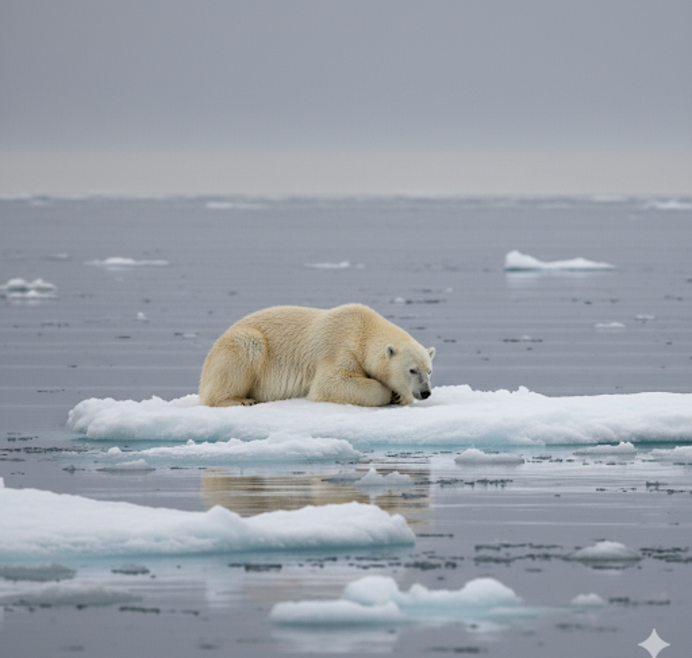
3. Arctic ecosystems — melting sea ice and shifting species distributions
In the Arctic, rising temperatures are causing rapid sea-ice loss (declining ~12% per decade), which destroys habitat for ice-dependent animals like seals, walruses, and polar bears.
As ice disappears, food webs shift: ice-algae (foundation of marine food chain) decline → fewer plankton/zooplankton → fewer fish → fewer predators.
Terrestrial Arctic ecosystems also change: shrubs and boreal species migrate north, altering tundra communities. Some high-Arctic species may lose their only habitats.
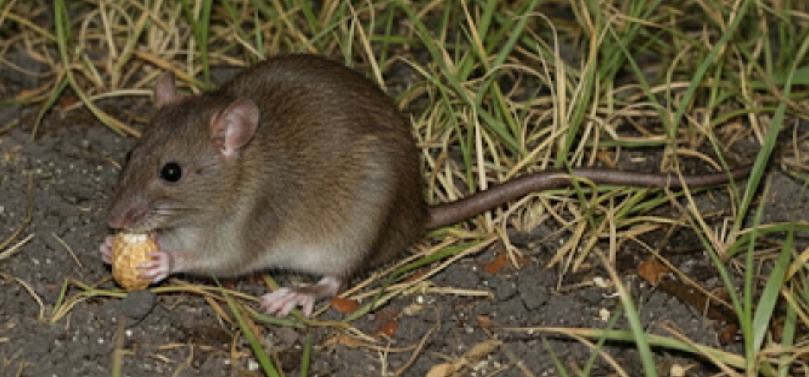
4. Small mammals lost due to sea-level rise and island habitat loss — e.g. Bramble Cay melomys
The Bramble Cay melomys was declared extinct ,its habitat, a tiny low-lying island, was overrun by rising sea levels and storm surges linked to climate change.
This shows how vulnerable small, specialized island species are when their habitat literally disappears. It’s one of the first documented mammal extinctions primarily due to climate change.
5. Collapse of fish stocks due to overfishing — e.g. Atlantic cod collapse in the North Atlantic / Grand Banks
Overexploitation (overfishing) reduced Atlantic cod populations to about 1% of historical levels in the early 1990s.
This dramatic decline didn’t only affect cod — many species that depended on cod (or competed with cod) were impacted, leading to broader marine ecosystem changes.
6. Insect declines on remote islands — e.g. native ants on Fiji
A recent study found that 79% of Fiji’s native ant species are in decline — evidence that even remote, seemingly pristine ecosystems are being affected.
Insects are critical to ecosystem functions (pollination, nutrient cycling, decomposition). Their decline can weaken entire ecosystems and reduce resilience.
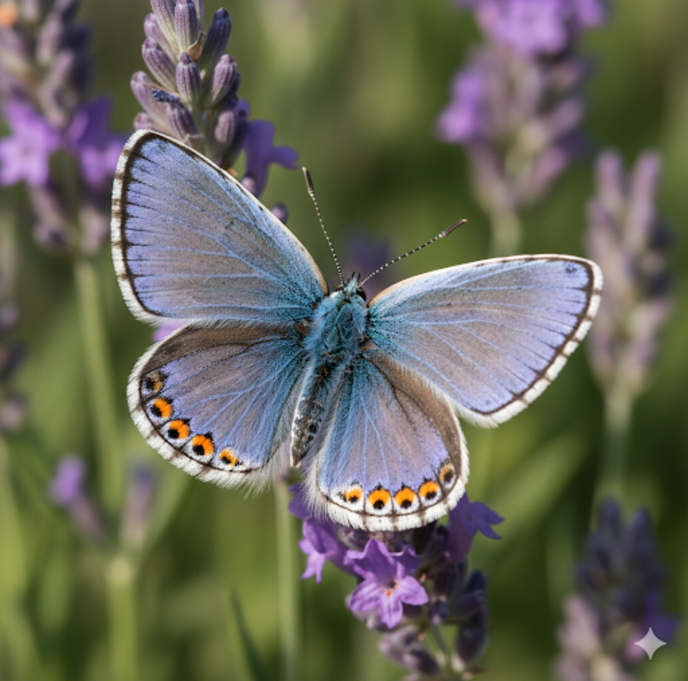
7. Loss of forest insect & butterfly diversity after deforestation — observed in tropical forests
Research shows that after deforestation and conversion to monoculture plantations, butterfly communities become dominated by dull-brown species — colourful species (often more specialized) decline or disappear.
Since butterflies are good indicators of overall ecosystem health (pollinators, prey, biodiversity), their decline signals serious ecosystem simplification and biodiversity loss.
8. Collapse or dramatic change of aquatic ecosystems after over-exploitation + other stressors — e.g. Aral Sea (historic example)
The Aral Sea, once one of the largest lakes in the world, shrank dramatically after rivers feeding it were diverted for large-scale irrigation — leading to collapse of the lake ecosystem.
As the water receded, fish populations collapsed, wetlands disappeared — biodiversity including aquatic species, birds, and wetland plants was lost; the region shifted to dry, unproductive desert-steppe.
9. Alpine and mountain ecosystems — species forced uphill by climate warming, reducing habitat
As temperatures rise, many alpine and mountain species must move to higher elevations (cooler zones).
But mountains have a top — once species reach the summit, they run out of habitat.
This “mountaintop squeeze” threatens animals and plants adapted to cold environments; some may go extinct if they can’t adapt or move.
10. Global decline in vertebrate populations since 1970 — across many ecosystems
According to a recent large-scale analysis by WWF, populations of wild vertebrates (mammals, birds, reptiles, amphibians, fish) dropped by about 73% between 1970 and 2020.
The greatest losses were in freshwater habitats (fish, amphibians, etc.), but declines occurred across terrestrial, marine and freshwater ecosystems — signaling that biodiversity loss is global and systemic.
How climate change increases disease risks
Warmer temperatures, changed rainfall, and milder winters allow vectors (mosquitoes, ticks, flies…) to survive longer, spread into new regions (higher latitudes or altitudes), and reproduce more — increasing disease risk.
As a result, illnesses once mostly found in tropical regions are now appearing in temperate zones.
Also, changing precipitation and extreme weather events — floods, droughts — affect water, sanitation, and human‑vector contact, opening new pathways for disease.
Key Diseases / Vectors Affected by Global Warming
Dengue fever & other Aedes-mosquito‑borne diseases
Dengue is transmitted by mosquitoes of the genus Aedes (especially Aedes aegypti, Aedes albopictus).
Climate change — warmer, wetter conditions — has allowed those mosquitoes to expand their habitat northward (into regions previously too cold) and lengthen their active seasons.
This raises the risk of dengue outbreaks (and other Aedes-borne diseases like chikungunya, Zika, yellow fever) in regions that didn’t face them before.
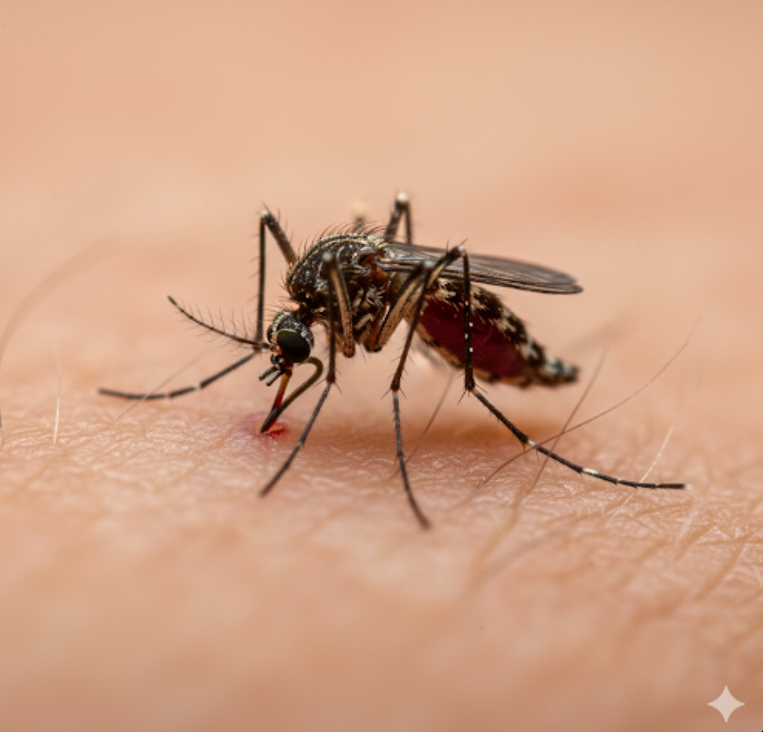
Malaria (and other Anopheles‑mosquito diseases
Malaria is transmitted via infected Anopheles mosquitoes.
As climates warm and seasons lengthen, areas that were once too cold for these mosquitoes — such as higher-altitude or more temperate zones — may become suitable for their survival and breeding.
This could lead to a north‑ or upslope (higher altitude) expansion of malaria risk zones, affecting populations with no prior exposure.
Lyme disease (tick‑borne)
Lyme disease is transmitted by ticks (especially of the genus Ixodes).
Warmer temperatures and milder winters allow ticks to survive longer and live in regions previously too cold.
This expands the period each year when people are at risk, and increases the geographic zones where Lyme disease can occur.
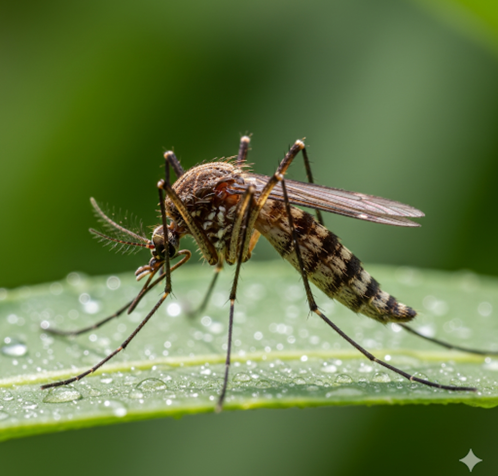
West Nile virus disease and other Culex‑mosquito diseases
West Nile virus (WNV) is transmitted by mosquitoes such as those of genus Culex.
As habitats for these mosquitoes expand due to warming, WNV risk zones may spread to new areas.
Warmer and longer summers can increase the mosquito population and lengthen the period of virus transmission.
Other Emerging or Resurgent Threats
Climate change also affects other disease‑vectors such as sandflies, midges, and other biting insects, which can spread diseases like Leishmaniasis, or diseases in livestock.
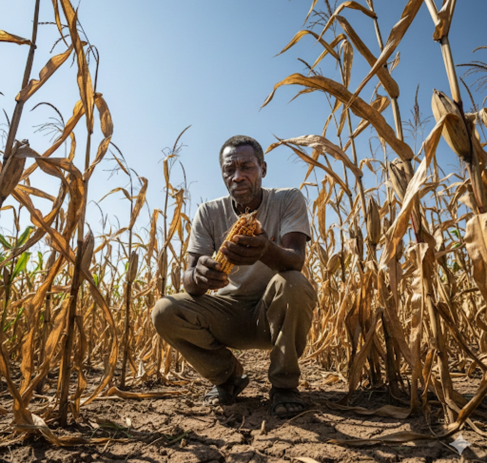
Climate Change and Carbon Effect On Agriculture
Carbon and Greenhouse Gases in Agriculture
Agriculture both contributes to climate change and is impacted by it.
The sector emits significant amounts of greenhouse gases — mainly carbon dioxide (CO₂), methane (CH₄) and nitrous oxide (N₂O).
These gases trap heat in the atmosphere and accelerate global warming.
Agriculture contributes roughly 21–37 % of total human greenhouse gas emissions when the whole food system (production, processing, transport, waste) is considered.
CO₂ itself enters the atmosphere primarily through:
Deforestation for farmland, which releases carbon stored in trees,
Fuel use for machinery, and
Soil disturbance that releases carbon stored in soils.
Methane, a much more potent heat-trapping gas, comes mainly from:
Livestock digestion (enteric fermentation) and manure,
Rice paddy cultivation in flooded fields.
Nitrous oxide — even more powerful than CO₂ — is released largely through:
Fertilizer application and soil management practices.
These gases increase atmospheric heat, raising global temperatures and altering climate patterns, which strongly affect agriculture.
️
Direct Impacts on Crop Yields and Productivity
Rising atmospheric CO₂ and global temperatures can cause:
Lower Yields
Heat stress can reduce photosynthesis and crop development rates.
Some studies project significant declines in staple crop yields, even with adaptation.
For example, maize, wheat, and soy yields could fall substantially under continued warming.
Altered Growing Seasons
Warmer temperatures can shift planting and harvest times, sometimes too quickly for farmers to adapt.
️ Droughts, Floods, and Weather Extremes
Extreme climate events — droughts, heat waves, and floods — damage crops and reduce reliable agricultural production.
Reduced Food Quality
Elevated CO₂ can reduce the nutritional content of crops like wheat and rice, lowering protein and mineral levels.
Soils, Water, and Carbon Storage
Healthy soils store carbon, which helps regulate the climate
. But intensive agriculture can degrade soil and release that stored carbon, worsening warming — a negative feedback loop.
Water resources are stressed by climate change, affecting irrigation and crop survivability. Warmer conditions also increase water demand by crops and livestock.
Intergovernmental Panel on Climate Change (IPCC)
The IPCC — the leading global scientific authority on climate — repeatedly reports that agriculture is both a significant source of greenhouse gas emissions and highly vulnerable to climate impacts.
Rising CO₂ and warming are projected to reduce agricultural productivity in many areas without ambitious mitigation and adaptation.
United Nations (UN)
The UN highlights that climate extremes are already reducing crop yields and soil fertility, pushing millions toward hunger and requiring urgent emission reductions and resilient farming practices.
Empty plates,Broken hopes, The human cost of famine
A famine is an extreme form of food insecurity in which large segments of a population face starvation, malnutrition, and high mortality because food is unavailable or inaccessible.
The United Nations (UN) uses strict criteria to declare famine in a region, including:
At least 20 % of people facing extreme hunger,
30 % of children malnourished,
A doubling of death rates beyond normal levels.
These criteria reflect a failure of food systems and access rather than just a shortfall of food itself.
Scientific studies in journals such as Nature and publications by organizations like the U.S. Department of Agriculture (USDA) and FAO (Food and Agriculture Organization) corroborate that greenhouse gas emissions from agriculture contribute to warming and that rising temperatures threaten future food production and nutritional quality.
Waters fading:The Urgent Crisis Of Drying Planet
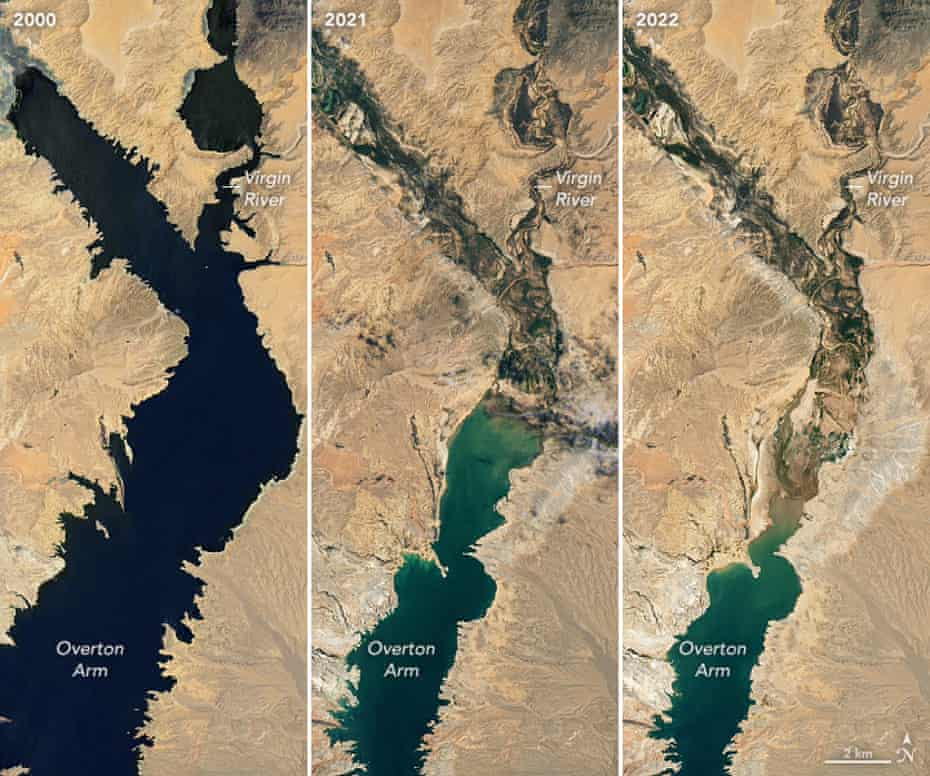
Lake Mead Supplies water to nearly 25million people across the American West.Photograph:NASA
Water bodies such as lakes, rivers, and reservoirs are shrinking or drying in many regions of the world.
This includes the dramatic retreat of large inland lakes (like those in Central Asia and the U.S. Southwest) and smaller reservoirs that people depend on for drinking water, irrigation, and ecosystems.
️ Why Are Water Bodies Drying Out?
1. Climate Warming and Increased Evaporation
One of the main drivers is global warming, caused primarily by increased concentrations of carbon dioxide (CO₂) and other greenhouse gases in the atmosphere due to human activities (such as burning fossil fuels and deforestation).
More greenhouse gases trap additional heat, leading to higher global temperatures.
Warmer air accelerates evaporation from lakes and rivers.
When evaporation exceeds the amount of water entering a basin from rain or rivers, lakes lose water faster than they can refill.
Scientists have found that more than half of the world’s largest lakes and reservoirs have shrunk over recent decades, and warming and climatic change are key contributors.
2. Reduced Inflow and Hydrological Changes
Climate change also alters precipitation patterns — some regions get less rain and snowfall, reducing the water supplied to lakes and rivers. At the same time, higher temperatures make the atmosphere “thirstier”, drawing more moisture from soils and surface water.
For many water bodies, inflow from rivers and ground sources is not keeping up with losses from evaporation and human use, meaning lakes shrink or dry out entirely.
3. Human Water Use and Land Management
While carbon-driven warming is a major factor, water bodies are also affected by water diversion, irrigation, damming, and over-extraction for agriculture and cities. These activities reduce the water that reaches lakes and rivers, worsening drying trends.
Role of Carbon in the Environment and Drying Water Bodies
The connection between carbon and drying water bodies lies in climate change:
Carbon dioxide (CO₂) accumulates in the atmosphere from human activities like burning fossil fuels.
CO₂ and other greenhouse gases trap heat that would normally escape to space.
This extra heat warms the planet, including land and water surfaces.
As the world warms, water evaporates more quickly from lakes and rivers. In many regions, precipitation patterns shift, leading to longer droughts or reduced runoff from snowmelt and rain into water bodies. The result is that lakes lose more water than they receive, causing shrinkage over time.
This change in water balance — more evaporation, less refill — is directly tied to carbon-driven climate change and is observed worldwide.
What Scientists and Research Say
Fangfang Yao and colleagues (University of Colorado Boulder) used satellite data to study nearly 2,000 lakes from 1992–2020 and found that about 53% have shrunk significantly, largely due to climate warming and human water use.
On the climate science consensus level, scientists warn that limiting warming to 1.5 °C above pre-industrial averages is essential to slow many impacts of climate change, including accelerated evaporation and drying of water bodies.
Furthermore, research such as that described by the International Atomic Energy Agency (IAEA) shows that higher temperatures increase evaporation from lakes faster than water can be replenished, risking long-term disappearance of some lakes that cannot balance evaporation losses.


 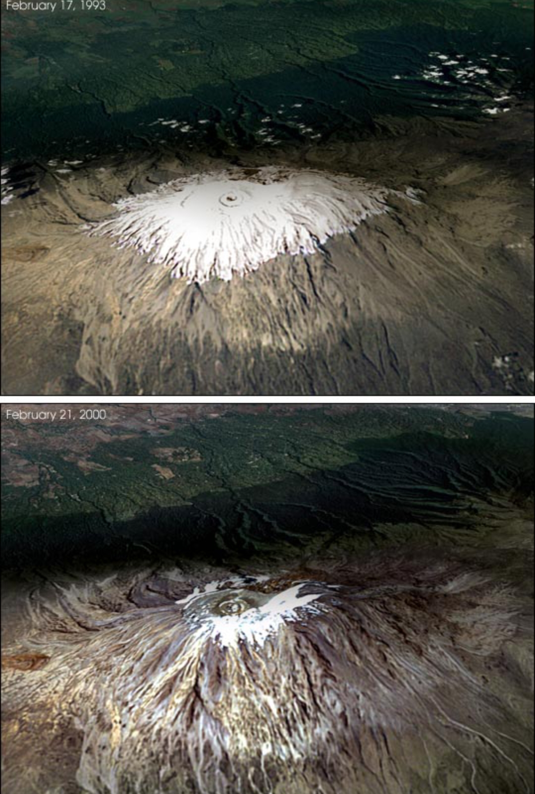
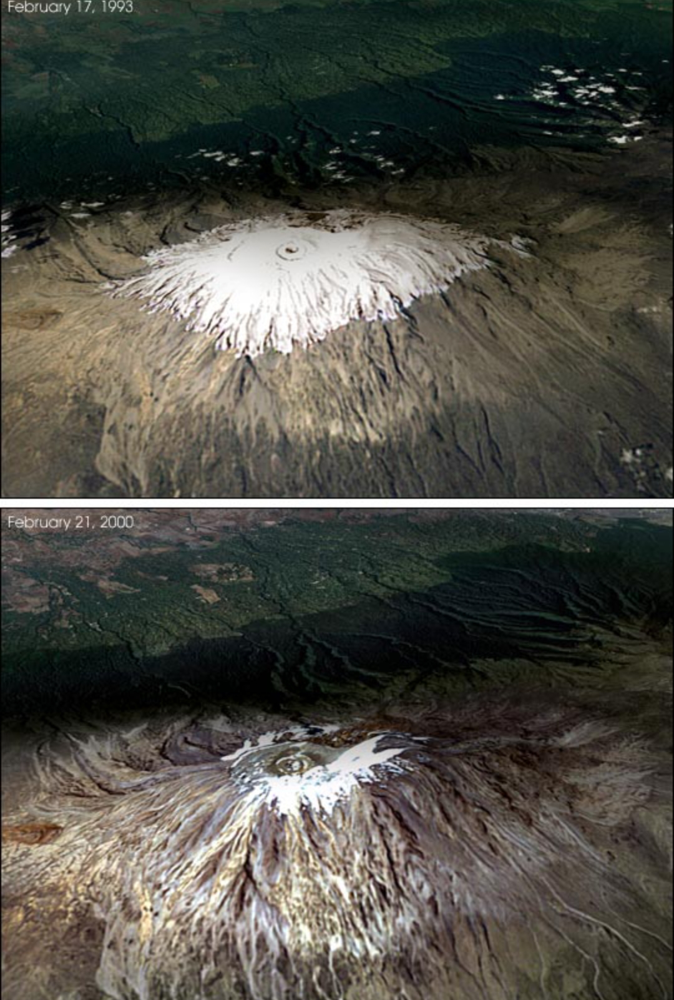
 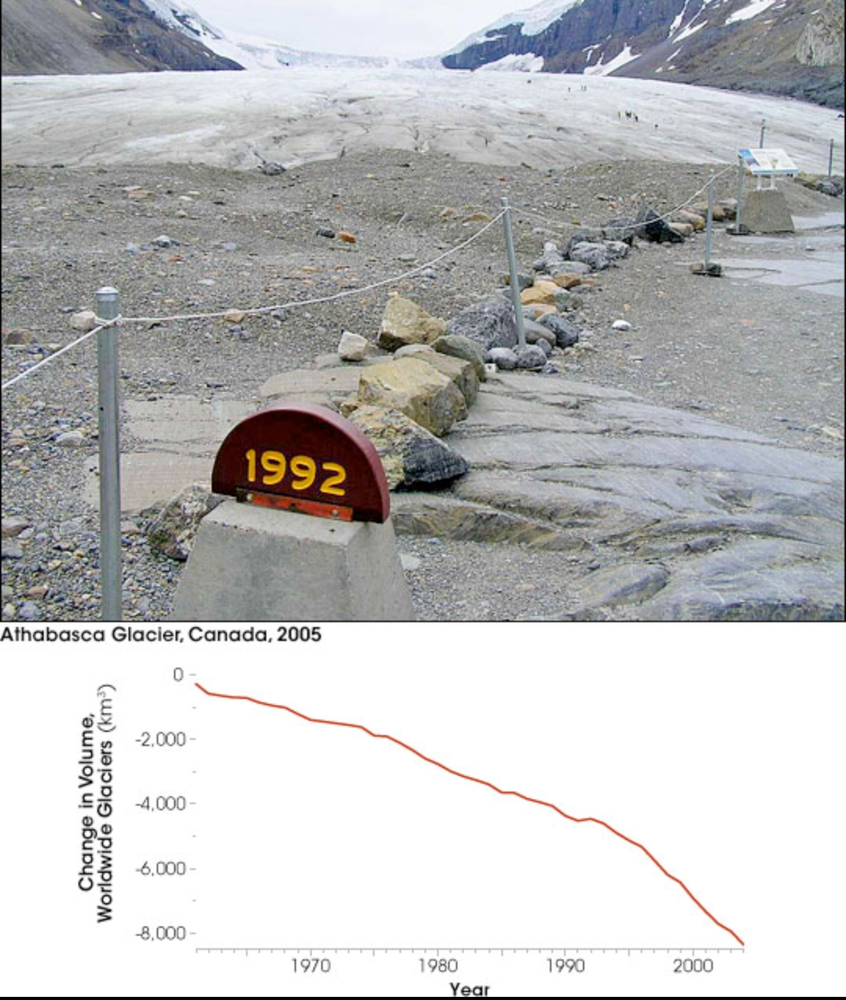
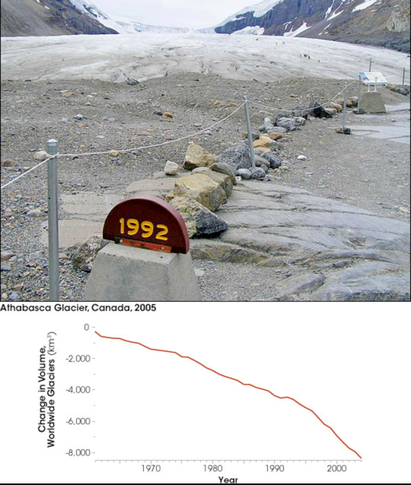